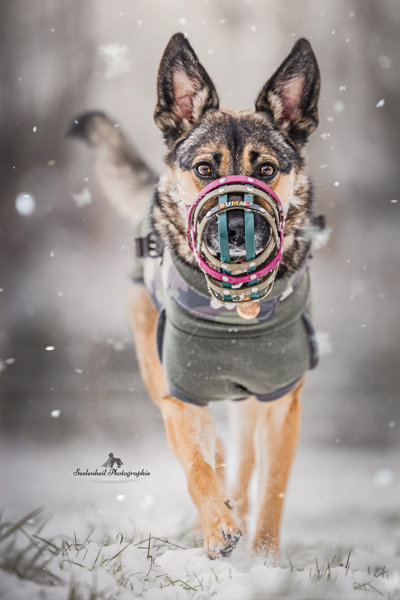
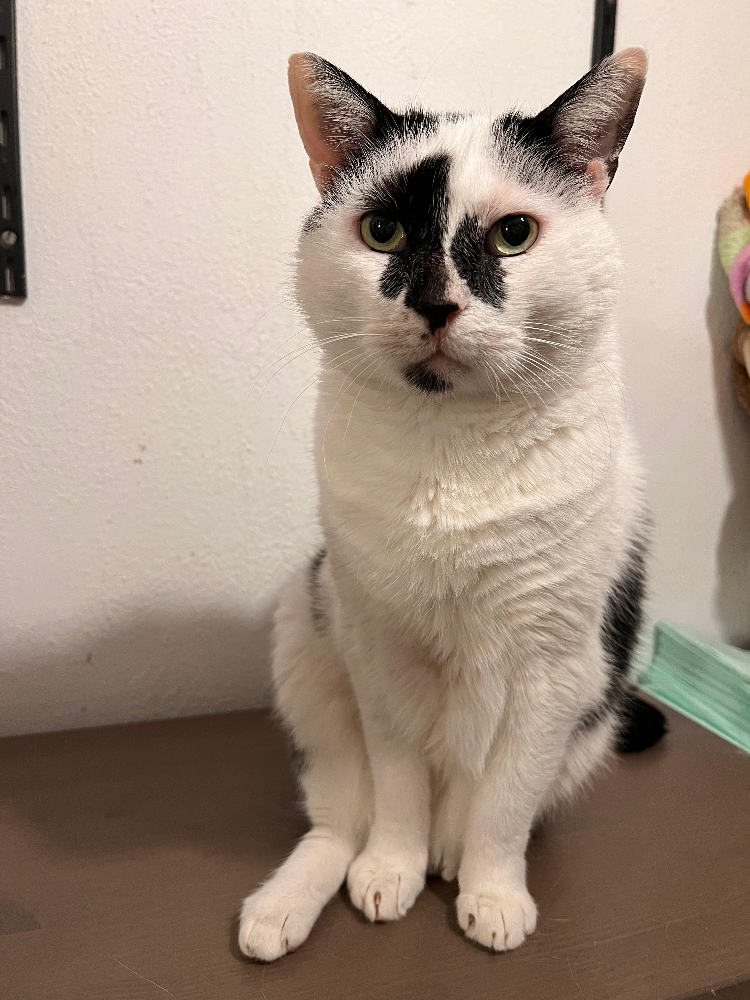
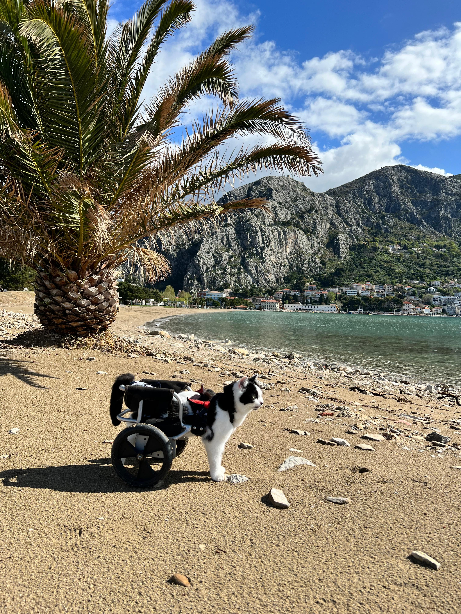

Pflege
Manche Tiere brauchen Hilfe bei Blase und Darm, Windeln, Hautpflege, Medikamente oder einen besonders sorgfältigen Tagesrhythmus.

Ein Zuhause für Hunde und Katzen, die sonst oft übersehen werden. Hier zählen nicht Diagnose oder Einschränkung, sondern Alltag, Nähe, Bewegung und das Recht zu bleiben.
Lara Sohn begann ihre Tierschutzarbeit mit Straßenkatzen in Südkroatien. Mit jedem Tier, das besondere Pflege brauchte, wuchs auch die Verantwortung.
Njuvra, der älteste Lebenshofbewohner, kam 2015 aus Kroatien zu Lara. Sein verdrehtes Hinterbein trägt er seit einem Unfall als Kitten. Murron kam 2017 als erste querschnittsgelähmte Katze dazu. Sie wurde auf einer Mülldeponie gefunden und ist heute die Oberbossin des Vereins.
Aus dieser Geschichte entstand ein Familienverbund, in dem kein Tier nur versorgt wird. Spielen, gemeinsame Gartenzeit, Gassi, schlafen, kuscheln, Nähe genießen und Teil der Familie sein: Das gehört hier zusammen.

Querschnittsgelähmte Hunde und Katzen in Rollis und Rutschsäcken, Tiere mit anderen Einschränkungen und gerettete Kaninchen finden auf dem Sonnenhof ihre Familie und ihr Zuhause für immer.
Manche Tiere brauchen Hilfe bei Blase und Darm, Windeln, Hautpflege, Medikamente oder einen besonders sorgfältigen Tagesrhythmus.
Rollis, Rutschsäcke, gemeinsame Gartenzeit und Gassi machen Mobilität im eigenen Tempo möglich.
Die Tiere sind nicht nur versorgt. Sie gehören zur harmonischen Gemeinschaft und dürfen einfach Tiere sein.
Hinter jedem Rolli, jedem Rutschsack und jedem besonderen Handgriff steht ein Tier mit eigener Vergangenheit, eigenem Charakter und einem festen Platz im Leben.

Seit 2015 auf dem HofDer älteste Lebenshofbewohner kam als junger Kater aus Kroatien. Nach einem Unfall als Kitten blieb sein Hinterbein verdreht. Seit Oktober 2015 lebt er bei Lara.

Seit 2017 auf dem HofAls erste querschnittsgelähmte Katze wurde sie auf einer Mülldeponie gefunden. Murron liebt Abenteuer mit dem Hunderudel und Urlaube. Sie ist die Oberbossin des Vereins.
Ein passender Rollstuhl kann Bewegung, Selbstständigkeit und Freude zurückbringen. Jeder Einsatz, jede Anpassung und jede Pflege braucht Zeit und Mittel.
Ehrenamtliche Helferinnen und Helfer unterstützen praktisch. Patinnen und Paten begleiten einzelne Tiere. Spenden finanzieren Pflege und medizinische Versorgung.
Du entscheidest, wie du unterstützen möchtest. Wichtig ist nicht die Form, sondern dass die Tiere sich auf ihren Alltag verlassen können.
Eine Überweisung oder eine PayPal-Spende hilft dort, wo gerade Pflege, Futter, Medikamente oder tierärztliche Versorgung anstehen.
Eine regelmäßige Unterstützung gibt Planungssicherheit. Über Instagram kannst du direkt nach einer Patenschaft fragen.
Auch ehrenamtliche Hilfe trägt die Hofgemeinschaft. Wer unterstützen möchte, kann sich direkt beim Sonnenhof melden.
Einblicke in das tägliche Leben, die Tiere und ihre besonderen kleinen und großen Momente.
Zum Sonnenhof auf InstagramDer Verein steht hinter dem Sonnenhof und setzt sich für Tiere in Not und Tiere mit Behinderung ein.
Zum Verein auf Instagram